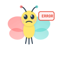

Lesson 11-13
문자열 활용
문자열 검색, 연결, 문자 판별 함수를 배우고, KOI 유형 문자열 문제를 풀어요.
📚 이번에 배울 것
- strchr, strstr로 문자열 안에서 검색할 수 있어요.
- strcat으로 문자열을 연결할 수 있어요.
- isalpha, isdigit, toupper 등 문자 판별 함수를 사용할 수 있어요.
- KOI 유형의 문자열 처리 문제를 풀 수 있어요.
✅ 시작 전 체크
- strlen, strcmp, strcpy를 사용할 수 있다
- 문자 배열과 널 종료 문자를 이해한다
Part 1 진행률: 60%
문자열 검색: 원하는 글자 찾기
문자열 안에서 특정 글자나 단어를 찾고 싶을 때가 있지? strchr과 strstr이 그걸 해줘!
strchr_demo.c
| 1 | #include <stdio.h> |
| 2 | #include <string.h> |
| 3 | |
| 4 | int main(void) { |
| 5 | char str[] = "Hello, World!"; |
| 6 | |
| 7 | // strchr: 문자 하나 찾기 |
| 8 | char *pos = strchr(str, 'W'); |
| 9 | if (pos != NULL) { |
| 10 | printf("'W' 발견: %s\n", pos); // World! |
| 11 | printf("위치: %ld번째\n", pos - str); // 7 |
| 12 | } |
| 13 | |
| 14 | return 0; |
| 15 | } |
실행 결과
'W' 발견: World!
위치: 7번째
strstr_demo.c
| 1 | #include <stdio.h> |
| 2 | #include <string.h> |
| 3 | |
| 4 | int main(void) { |
| 5 | char str[] = "I love C programming"; |
| 6 | |
| 7 | // strstr: 부분 문자열 찾기 |
| 8 | char *pos = strstr(str, "C pro"); |
| 9 | if (pos != NULL) { |
| 10 | printf("발견: %s\n", pos); // C programming |
| 11 | } else { |
| 12 | printf("못 찾음\n"); |
| 13 | } |
| 14 | |
| 15 | return 0; |
| 16 | } |
실행 결과
발견: C programming

strchr은 한 글자, strstr은 부분 문자열을 찾아요
문자열 연결: strcat
strcat_demo.c
| 1 | #include <stdio.h> |
| 2 | #include <string.h> |
| 3 | |
| 4 | int main(void) { |
| 5 | char greeting[50] = "Hello"; |
| 6 | |
| 7 | strcat(greeting, ", "); // 뒤에 이어 붙이기 |
| 8 | strcat(greeting, "World!"); |
| 9 | |
| 10 | printf("%s\n", greeting); // Hello, World! |
| 11 | |
| 12 | return 0; |
| 13 | } |
실행 결과
Hello, World!
strcat 사용 시 주의사항
목적지 배열에 충분한 공간이 있어야 해요! 위 코드에서 greeting을
char greeting[10]으로 선언하면 공간이 부족해서 위험해요. 넉넉하게 잡으세요.문자 판별 함수: ctype.h
글자 하나가 알파벳인지, 숫자인지, 대문자인지 판별하는 함수들이 있어.
ctype.h에 들어 있지!ctype_demo.c
| 1 | #include <stdio.h> |
| 2 | #include <ctype.h> |
| 3 | |
| 4 | int main(void) { |
| 5 | char ch = 'a'; |
| 6 | |
| 7 | printf("isalpha('%c'): %d\n", ch, isalpha(ch)); // 0 아닌 값 |
| 8 | printf("isdigit('%c'): %d\n", ch, isdigit(ch)); // 0 |
| 9 | printf("isupper('%c'): %d\n", ch, isupper(ch)); // 0 |
| 10 | printf("islower('%c'): %d\n", ch, islower(ch)); // 0 아닌 값 |
| 11 | printf("toupper('%c'): %c\n", ch, toupper(ch)); // A |
| 12 | |
| 13 | return 0; |
| 14 | } |
실행 결과
isalpha('a'): 1
isdigit('a'): 0
isupper('a'): 0
islower('a'): 1
toupper('a'): A

ctype.h의 주요 함수 정리
문자열 전체를 대문자로 바꾸기
to_upper.c
| 1 | #include <stdio.h> |
| 2 | #include <ctype.h> |
| 3 | #include <string.h> |
| 4 | |
| 5 | void toUpperStr(char str[]) { |
| 6 | for (int i = 0; str[i] != '\0'; i++) { |
| 7 | str[i] = toupper(str[i]); |
| 8 | } |
| 9 | } |
| 10 | |
| 11 | int main(void) { |
| 12 | char msg[] = "Hello, World!"; |
| 13 | printf("변환 전: %s\n", msg); |
| 14 | toUpperStr(msg); |
| 15 | printf("변환 후: %s\n", msg); |
| 16 | return 0; |
| 17 | } |
실행 결과
변환 전: Hello, World!
변환 후: HELLO, WORLD!
for문의 조건이
str[i] != '\0'인 거 보여? 이게 문자열을 순회하는 기본 패턴이야. \0을 만나면 멈추는 거지!KOI 유형: 알파벳 개수 세기
KOI(한국정보올림피아드) 대회에서 자주 나오는 유형이에요. 문자열을 순회하면서 조건에 맞는 문자를 세는 문제예요.
count_alpha.c
| 1 | #include <stdio.h> |
| 2 | #include <ctype.h> |
| 3 | #include <string.h> |
| 4 | |
| 5 | int main(void) { |
| 6 | char str[200]; |
| 7 | int alpha = 0, digit = 0, other = 0; |
| 8 | |
| 9 | printf("문자열 입력: "); |
| 10 | scanf("%s", str); |
| 11 | |
| 12 | for (int i = 0; str[i] != '\0'; i++) { |
| 13 | if (isalpha(str[i])) { |
| 14 | alpha++; |
| 15 | } else if (isdigit(str[i])) { |
| 16 | digit++; |
| 17 | } else { |
| 18 | other++; |
| 19 | } |
| 20 | } |
| 21 | |
| 22 | printf("알파벳: %d개\n", alpha); |
| 23 | printf("숫자: %d개\n", digit); |
| 24 | printf("기타: %d개\n", other); |
| 25 | |
| 26 | return 0; |
| 27 | } |
실행 결과
문자열 입력: Hello123!@#
알파벳: 5개
숫자: 3개
기타: 3개

문자열 순회 + 조건 분기 -- KOI의 기본 패턴이에요
KOI 유형: 단어 뒤집기
reverse_word.c
| 1 | #include <stdio.h> |
| 2 | #include <string.h> |
| 3 | |
| 4 | void reverseStr(char str[]) { |
| 5 | int len = strlen(str); |
| 6 | for (int i = 0; i < len / 2; i++) { |
| 7 | char temp = str[i]; |
| 8 | str[i] = str[len - 1 - i]; |
| 9 | str[len - 1 - i] = temp; |
| 10 | } |
| 11 | } |
| 12 | |
| 13 | int main(void) { |
| 14 | char word[100]; |
| 15 | printf("단어 입력: "); |
| 16 | scanf("%s", word); |
| 17 | reverseStr(word); |
| 18 | printf("뒤집은 결과: %s\n", word); |
| 19 | return 0; |
| 20 | } |
실행 결과
단어 입력: algorithm
뒤집은 결과: mhtirogla

strcat을 쓸 때 목적지 배열 크기를 넉넉하게 잡지 않으면 메모리를 넘어서 쓰게 돼. 이건 찾기 어려운 버그를 만들어!
연습문제
문제 1 ★ 기본
strchr과 strstr의 차이를 설명하세요.
여기에 답을 써 보세요
문제 2 ★ 기본
isdigit('7')의 반환값은?
여기에 답을 써 보세요
문제 3 ★ 기본
strcat 사용 시 주의해야 할 점은 무엇인가요?
여기에 답을 써 보세요
문제 4 ★★ 도전
문자열에서 소문자의 개수를 세는 함수 int countLower(char str[])를 작성하세요.
여기에 답을 써 보세요
문제 5 ★★ 도전
문자열에서 특정 문자의 등장 횟수를 세는 함수 int countChar(char str[], char ch)를 작성하세요.
여기에 답을 써 보세요
문제 6 ★★★ 심화
[KOI 유형] 문자열을 입력받아 대문자를 소문자로, 소문자를 대문자로 바꿔 출력하는 프로그램을 작성하세요. 알파벳이 아닌 문자는 그대로 출력합니다.
여기에 답을 써 보세요
정답
정답
문제 1 strchr은 문자 1개를 찾고, strstr은 부분 문자열(여러 글자)을 찾아요. 둘 다 찾으면 해당 위치의 포인터를, 못 찾으면 NULL을 반환해요.
문제 2 0이 아닌 값(참). '7'은 숫자 문자이므로 isdigit이 참을 반환해요.
문제 3 목적지 배열에 원래 문자열 + 추가 문자열 + \0을 담을 충분한 공간이 있어야 해요. 공간이 부족하면 버퍼 오버플로가 발생해요.
문제 4 int countLower(char str[]) {
int count = 0;
for (int i = 0; str[i] != '\0'; i++) {
if (islower(str[i])) count++;
}
return count;
}
문제 5 int countChar(char str[], char ch) {
int count = 0;
for (int i = 0; str[i] != '\0'; i++) {
if (str[i] == ch) count++;
}
return count;
}
문제 6 #include
#include
int main(void) {
char str[200];
scanf("%s", str);
for (int i = 0; str[i] != '\0'; i++) {
if (isupper(str[i]))
printf("%c", tolower(str[i]));
else if (islower(str[i]))
printf("%c", toupper(str[i]));
else
printf("%c", str[i]);
}
printf("\n");
return 0;
}
용어 정리
[심화] 문자열 고급
[C 코드] 문자열 — 파싱과 변환
| 1 | #include <stdio.h> |
| 2 | #include <string.h> |
| 3 | #include <ctype.h> |
| 4 | #include <stdlib.h> |
| 5 | |
| 6 | // atoi 직접 구현 |
| 7 | int my_atoi(const char *s) { |
| 8 | while (isspace(*s)) s++; |
| 9 | int sign = 1; |
| 10 | if (*s == '-') { sign = -1; s++; } |
| 11 | else if (*s == '+') s++; |
| 12 | |
| 13 | int result = 0; |
| 14 | while (isdigit(*s)) { |
| 15 | result = result * 10 + (*s - '0'); |
| 16 | s++; |
| 17 | } |
| 18 | return sign * result; |
| 19 | } |
| 20 | |
| 21 | // 단어 분리 (strtok 직접 구현) |
| 22 | int split(char *str, const char *delim, char **tokens, int max) { |
| 23 | int count = 0; |
| 24 | char *p = str; |
| 25 | while (*p && count < max) { |
| 26 | while (*p && strchr(delim, *p)) p++; // skip delim |
| 27 | if (!*p) break; |
| 28 | tokens[count++] = p; |
| 29 | while (*p && !strchr(delim, *p)) p++; // find end |
| 30 | if (*p) *p++ = '\0'; |
| 31 | } |
| 32 | return count; |
| 33 | } |
| 34 | |
| 35 | // 팰린드롬 검사 |
| 36 | int is_palindrome(const char *s) { |
| 37 | int l = 0, r = strlen(s) - 1; |
| 38 | while (l < r) { |
| 39 | while (l < r && !isalnum(s[l])) l++; |
| 40 | while (l < r && !isalnum(s[r])) r--; |
| 41 | if (tolower(s[l]) != tolower(s[r])) return 0; |
| 42 | l++; r--; |
| 43 | } |
| 44 | return 1; |
| 45 | } |
| 46 | |
| 47 | // 문자열 압축 (RLE) |
| 48 | void rle_compress(const char *s, char *out) { |
| 49 | int j = 0; |
| 50 | for (int i = 0; s[i]; ) { |
| 51 | char c = s[i]; |
| 52 | int count = 0; |
| 53 | while (s[i] == c) { i++; count++; } |
| 54 | if (count > 1) j += sprintf(out+j, "%d%c", count, c); |
| 55 | else out[j++] = c; |
| 56 | } |
| 57 | out[j] = '\0'; |
| 58 | } |
| 59 | |
| 60 | int main() { |
| 61 | printf("atoi(\"-123\") = %d\n", my_atoi("-123")); |
| 62 | printf("atoi(\" +42\") = %d\n", my_atoi(" +42")); |
| 63 | |
| 64 | char sentence[] = "Hello World Foo Bar"; |
| 65 | char *words[10]; |
| 66 | int n = split(sentence, " ", words, 10); |
| 67 | printf("\n단어 %d개: ", n); |
| 68 | for (int i = 0; i < n; i++) printf("[%s] ", words[i]); |
| 69 | |
| 70 | printf("\n\npalindrome: "); |
| 71 | printf("\"racecar\"=%d, ", is_palindrome("racecar")); |
| 72 | printf("\"hello\"=%d\n", is_palindrome("hello")); |
| 73 | |
| 74 | char comp[100]; |
| 75 | rle_compress("aaabbbccddddde", comp); |
| 76 | printf("RLE: %s\n", comp); |
| 77 | return 0; |
| 78 | } |
실행 결과
atoi("-123") = -123
atoi(" +42") = 42
단어 4개: [Hello] [World] [Foo] [Bar]
palindrome: "racecar"=1, "hello"=0
RLE: 3a3b2c5de
atoi vs strtol
atoi: 에러 처리 없음! strtol: 에러 감지, base 지정 가능. strtol이 안전한 선택!
regex
정규 표현식. 패턴 매칭의 표준. C에서는 (POSIX). 이메일, URL 검증에 핵심!
atoi를 직접 구현하면 문자열→숫자 변환의 원리가 보여! 부호 처리 + 자릿수 누적!
RLE 압축 = 연속 문자 세기! aaabbb→3a3b. 가장 단순한 압축. 흑백 이미지에 효과적!
[C 코드] 문자열 고급 — 파싱과 변환
| 1 | #include <stdio.h> |
| 2 | #include <string.h> |
| 3 | #include <ctype.h> |
| 4 | #include <stdlib.h> |
| 5 | |
| 6 | // 단어 세기 |
| 7 | int word_count(const char *s) { |
| 8 | int count = 0, in_word = 0; |
| 9 | while (*s) { |
| 10 | if (isspace(*s)) in_word = 0; |
| 11 | else if (!in_word) { in_word = 1; count++; } |
| 12 | s++; |
| 13 | } |
| 14 | return count; |
| 15 | } |
| 16 | |
| 17 | // 문자열 뒤집기 (in-place) |
| 18 | void str_reverse(char *s) { |
| 19 | int len = strlen(s); |
| 20 | for (int i = 0; i < len/2; i++) { |
| 21 | char t = s[i]; s[i] = s[len-1-i]; s[len-1-i] = t; |
| 22 | } |
| 23 | } |
| 24 | |
| 25 | // 팰린드롬 검사 |
| 26 | int is_palindrome(const char *s) { |
| 27 | int len = strlen(s); |
| 28 | for (int i = 0; i < len/2; i++) |
| 29 | if (tolower(s[i]) != tolower(s[len-1-i])) return 0; |
| 30 | return 1; |
| 31 | } |
| 32 | |
| 33 | // CSV 파싱 |
| 34 | void parse_csv(const char *line) { |
| 35 | char buf[256]; |
| 36 | strncpy(buf, line, 255); buf[255] = 0; |
| 37 | printf("CSV fields: "); |
| 38 | char *tok = strtok(buf, ","); |
| 39 | int i = 0; |
| 40 | while (tok) { |
| 41 | printf("[%d]=%s ", i++, tok); |
| 42 | tok = strtok(NULL, ","); |
| 43 | } |
| 44 | printf("\n"); |
| 45 | } |
| 46 | |
| 47 | // atoi 직접 구현 |
| 48 | int my_atoi(const char *s) { |
| 49 | int result = 0, sign = 1; |
| 50 | while (isspace(*s)) s++; |
| 51 | if (*s == '-') { sign = -1; s++; } |
| 52 | else if (*s == '+') s++; |
| 53 | while (isdigit(*s)) { |
| 54 | result = result * 10 + (*s - '0'); |
| 55 | s++; |
| 56 | } |
| 57 | return result * sign; |
| 58 | } |
| 59 | |
| 60 | int main() { |
| 61 | printf("word_count: %d\n", word_count(" Hello World Test ")); |
| 62 | |
| 63 | char s[] = "Hello"; |
| 64 | str_reverse(s); |
| 65 | printf("reverse: %s\n", s); |
| 66 | |
| 67 | printf("palindrome(racecar): %d\n", is_palindrome("racecar")); |
| 68 | printf("palindrome(hello): %d\n", is_palindrome("hello")); |
| 69 | |
| 70 | parse_csv("Alice,25,Seoul,Engineer"); |
| 71 | |
| 72 | printf("my_atoi(\" -42\") = %d\n", my_atoi(" -42")); |
| 73 | printf("my_atoi(\"12345\") = %d\n", my_atoi("12345")); |
| 74 | return 0; |
| 75 | } |
실행 결과
word_count: 3
reverse: olleH
palindrome(racecar): 1
palindrome(hello): 0
CSV fields: [0]=Alice [1]=25 [2]=Seoul [3]=Engineer
my_atoi(" -42") = -42
my_atoi("12345") = 12345
[심화 내용] 문자열 매칭 알고리즘
Brute Force: O(nm). 모든 위치에서 비교.
KMP (Knuth-Morris-Pratt):
실패 함수(failure function)로 불필요한 비교 건너뜀
O(n+m). 전처리 O(m).
Boyer-Moore:
뒤에서부터 비교. Bad character + Good suffix
실전에서 가장 빠름! grep 등에서 사용
Rabin-Karp:
해시 비교. 롤링 해시로 O(1) 갱신
다중 패턴 검색에 유리
Aho-Corasick:
여러 패턴 동시 검색. 트라이 + 실패 링크
안티바이러스, 침입 탐지에 사용
KMP (Knuth-Morris-Pratt):
실패 함수(failure function)로 불필요한 비교 건너뜀
O(n+m). 전처리 O(m).
Boyer-Moore:
뒤에서부터 비교. Bad character + Good suffix
실전에서 가장 빠름! grep 등에서 사용
Rabin-Karp:
해시 비교. 롤링 해시로 O(1) 갱신
다중 패턴 검색에 유리
Aho-Corasick:
여러 패턴 동시 검색. 트라이 + 실패 링크
안티바이러스, 침입 탐지에 사용
strtok
문자열 토큰 분리. 원본 수정(\0 삽입)! static 변수 사용 → 스레드 안전하지 않음. strtok_r 사용!
KMP
Knuth-Morris-Pratt. 문자열 매칭 O(n+m). 부분 일치 테이블로 역추적 최소화! 1977년 발표.
atoi를 직접 만들면 문자열↔숫자 변환의 원리가 보여! 한 글자씩 result*10+digit!
regex
정규표현식. 패턴 매칭의 끝판왕. C: (POSIX). grep, sed, 모든 언어에서 지원!
trie
트라이. 문자열 검색 트리. 접두사 탐색 O(m). 자동완성, 사전, IP 라우팅에 활용!
string interning
문자열 인터닝. 동일 문자열을 하나만 저장. Java/Python 기본. 메모리 절약+비교 O(1)!

문자열 = 배열+포인터+알고리즘의 종합! 파싱, 변환, 검색 — 실전 프로그래밍의 80%!
[C 코드] 문자열 고급 — 정규식 간이 구현
| 1 | #include <stdio.h> |
| 2 | |
| 3 | // 간이 패턴 매칭 (? = 한 문자, * = 0개 이상) |
| 4 | int match(const char *pattern, const char *text) { |
| 5 | if (*pattern == '\0') return *text == '\0'; |
| 6 | if (*pattern == '*') { |
| 7 | // * = 0개 매치 시도, 실패하면 1개 소비 후 재시도 |
| 8 | if (match(pattern+1, text)) return 1; |
| 9 | if (*text && match(pattern, text+1)) return 1; |
| 10 | return 0; |
| 11 | } |
| 12 | if (*text && (*pattern == '?' || *pattern == *text)) |
| 13 | return match(pattern+1, text+1); |
| 14 | return 0; |
| 15 | } |
| 16 | |
| 17 | int main() { |
| 18 | struct { const char *p; const char *t; } tests[] = { |
| 19 | {"hello", "hello"}, // 정확히 일치 |
| 20 | {"h?llo", "hello"}, // ? = e |
| 21 | {"h*o", "hello"}, // * = ell |
| 22 | {"h*o", "ho"}, // * = 빈 문자열 |
| 23 | {"*world", "hello world"}, |
| 24 | {"h*d", "hello world"}, // * = ello worl |
| 25 | {"abc", "abcd"}, // 불일치 (뒤에 d) |
| 26 | {"a*b*c", "aXXbYYc"}, |
| 27 | }; |
| 28 | int n = sizeof(tests)/sizeof(tests[0]); |
| 29 | |
| 30 | for (int i = 0; i < n; i++) |
| 31 | printf("match(\"%s\", \"%s\") = %s\n", |
| 32 | tests[i].p, tests[i].t, |
| 33 | match(tests[i].p, tests[i].t) ? "YES" : "NO"); |
| 34 | return 0; |
| 35 | } |
실행 결과
match("hello", "hello") = YES
match("h?llo", "hello") = YES
match("h*o", "hello") = YES
match("h*o", "ho") = YES
match("*world", "hello world") = YES
match("h*d", "hello world") = YES
match("abc", "abcd") = NO
match("a*b*c", "aXXbYYc") = YES
glob pattern
파일 이름 패턴. ?=한 문자, *=여러 문자. 셸에서 ls *.c, rm temp?. 정규식의 간소판!
와일드카드 매칭을 재귀로! *는 "0개 또는 1개 소비 후 재시도". 단 10줄로 구현!
[C 코드] 문자열 고급 — Base64 인코더
| 1 | #include <stdio.h> |
| 2 | #include <string.h> |
| 3 | |
| 4 | const char b64[] = "ABCDEFGHIJKLMNOPQRSTUVWXYZabcdefghijklmnopqrstuvwxyz0123456789+/"; |
| 5 | |
| 6 | void base64_encode(const unsigned char *input, int len, char *output) { |
| 7 | int i, j = 0; |
| 8 | for (i = 0; i < len - 2; i += 3) { |
| 9 | output[j++] = b64[(input[i] >> 2) & 0x3F]; |
| 10 | output[j++] = b64[((input[i] & 0x3) << 4) | (input[i+1] >> 4)]; |
| 11 | output[j++] = b64[((input[i+1] & 0xF) << 2) | (input[i+2] >> 6)]; |
| 12 | output[j++] = b64[input[i+2] & 0x3F]; |
| 13 | } |
| 14 | if (i < len) { |
| 15 | output[j++] = b64[(input[i] >> 2) & 0x3F]; |
| 16 | if (i == len - 1) { |
| 17 | output[j++] = b64[(input[i] & 0x3) << 4]; |
| 18 | output[j++] = '='; |
| 19 | } else { |
| 20 | output[j++] = b64[((input[i] & 0x3) << 4) | (input[i+1] >> 4)]; |
| 21 | output[j++] = b64[(input[i+1] & 0xF) << 2]; |
| 22 | } |
| 23 | output[j++] = '='; |
| 24 | } |
| 25 | output[j] = 0; |
| 26 | } |
| 27 | |
| 28 | int main() { |
| 29 | const char *tests[] = {"Hello", "Hello, World!", "C programming", "AB"}; |
| 30 | char encoded[256]; |
| 31 | |
| 32 | for (int i = 0; i < 4; i++) { |
| 33 | base64_encode((unsigned char*)tests[i], strlen(tests[i]), encoded); |
| 34 | printf("\"%s\" → \"%s\"\n", tests[i], encoded); |
| 35 | } |
| 36 | return 0; |
| 37 | } |
실행 결과
"Hello" → "SGVsbG8="
"Hello, World!" → "SGVsbG8sIFdvcmxkIQ=="
"C programming" → "QyBwcm9ncmFtbWluZw=="
"AB" → "QUI="
Base64
6비트 단위 인코딩. 3바이트→4문자. 이메일 첨부, JWT, Data URI에 사용! RFC 4648.
Base64 = 비트 조작 + 문자열의 결합! 3바이트를 6비트씩 쪼개서 64개 문자로 변환!
[활동] 문자열 고급 마스터 체크리스트
단어 세기, 뒤집기를 구현한다
팰린드롬을 검사한다
CSV를 파싱한다
atoi를 직접 구현한다
와일드카드 매칭을 만든다
Base64 인코더를 구현한다
KMP/Boyer-Moore를 이해한다
5개 이상이면 문자열 고급 마스터!
팰린드롬을 검사한다
CSV를 파싱한다
atoi를 직접 구현한다
와일드카드 매칭을 만든다
Base64 인코더를 구현한다
KMP/Boyer-Moore를 이해한다
5개 이상이면 문자열 고급 마스터!
suffix array
접미사 배열. 모든 접미사를 정렬. 부분 문자열 검색 O(m log n). DNA 서열 분석에 활용!
Levenshtein
편집 거리. 삽입/삭제/치환 횟수. 맞춤법 검사, DNA 비교, 유사도 측정의 핵심 알고리즘!
문자열 고급 완전 졸업! 파싱→변환→매칭→Base64. 실전 프로그래밍의 핵심을 마스터!
[C 코드] 문자열 고급 — JSON 간이 파서
| 1 | #include <stdio.h> |
| 2 | #include <string.h> |
| 3 | #include <ctype.h> |
| 4 | |
| 5 | typedef struct { char key[30]; char value[50]; } KV; |
| 6 | |
| 7 | int parse_json_simple(const char *json, KV *kvs, int max) { |
| 8 | int count = 0; |
| 9 | const char *p = json; |
| 10 | while (*p && count < max) { |
| 11 | // 키 찾기 |
| 12 | const char *ks = strchr(p, '\"'); |
| 13 | if (!ks) break; |
| 14 | const char *ke = strchr(ks+1, '\"'); |
| 15 | if (!ke) break; |
| 16 | int klen = ke-ks-1; |
| 17 | strncpy(kvs[count].key, ks+1, klen<29?klen:29); |
| 18 | kvs[count].key[klen<29?klen:29] = 0; |
| 19 | |
| 20 | // 값 찾기 |
| 21 | p = strchr(ke+1, ':'); |
| 22 | if (!p) break; |
| 23 | p++; |
| 24 | while (isspace(*p)) p++; |
| 25 | |
| 26 | if (*p == '\"') { |
| 27 | const char *vs = p+1; |
| 28 | const char *ve = strchr(vs, '\"'); |
| 29 | int vlen = ve-vs; |
| 30 | strncpy(kvs[count].value, vs, vlen<49?vlen:49); |
| 31 | kvs[count].value[vlen<49?vlen:49] = 0; |
| 32 | p = ve+1; |
| 33 | } else { |
| 34 | int vi = 0; |
| 35 | while (*p && *p!=',' && *p!='}' && vi<49) |
| 36 | kvs[count].value[vi++] = *p++; |
| 37 | kvs[count].value[vi] = 0; |
| 38 | } |
| 39 | count++; |
| 40 | } |
| 41 | return count; |
| 42 | } |
| 43 | |
| 44 | int main() { |
| 45 | const char *json = "{\"name\": \"Alice\", \"age\": 25, \"city\": \"Seoul\"}"; |
| 46 | KV kvs[10]; |
| 47 | int n = parse_json_simple(json, kvs, 10); |
| 48 | |
| 49 | printf("Parsed %d fields:\n", n); |
| 50 | for (int i = 0; i < n; i++) |
| 51 | printf(" %s = %s\n", kvs[i].key, kvs[i].value); |
| 52 | return 0; |
| 53 | } |
실행 결과
Parsed 3 fields:
name = Alice
age = 25
city = Seoul
JSON
JavaScript Object Notation. 키-값 쌍. 웹 API의 표준 포맷! RFC 8259. 가볍고 인간 친화적.
sscanf
문자열에서 파싱. sscanf(str,"%d-%d",&y,&m). printf의 역! 간단한 파서에 활용.
heredoc
히어독. 여러 줄 문자열. C에서는 리터럴 연결: "line1\n" "line2\n". C++11: R"(raw string)".
문자열 고급 완전 졸업! 파싱→Base64→JSON→와일드카드→매칭. 텍스트 처리의 달인!
[심화 내용] 문자열 알고리즘 성능
문자열 매칭 비교:
Brute Force: O(nm), 구현 쉬움
KMP: O(n+m), 실패 함수 전처리
Boyer-Moore: O(n/m) 최선, 실전 최고
Rabin-Karp: O(n+m) 평균, 다중 패턴
Aho-Corasick: O(n+m₁+...+mₖ), 여러 패턴 동시
응용:
grep: Boyer-Moore 변형
fgrep: Aho-Corasick
DNA 서열: Suffix Array + LCP
압축: LZ77(슬라이딩 윈도우), LZW(사전)
정규식 엔진:
NFA: Thompson 구성, 유연
DFA: 상태 수 폭발 가능, 빠름
PCRE: 역참조 등 확장 (NP-hard!)
Brute Force: O(nm), 구현 쉬움
KMP: O(n+m), 실패 함수 전처리
Boyer-Moore: O(n/m) 최선, 실전 최고
Rabin-Karp: O(n+m) 평균, 다중 패턴
Aho-Corasick: O(n+m₁+...+mₖ), 여러 패턴 동시
응용:
grep: Boyer-Moore 변형
fgrep: Aho-Corasick
DNA 서열: Suffix Array + LCP
압축: LZ77(슬라이딩 윈도우), LZW(사전)
정규식 엔진:
NFA: Thompson 구성, 유연
DFA: 상태 수 폭발 가능, 빠름
PCRE: 역참조 등 확장 (NP-hard!)
suffix tree
접미사 트리. O(n) 구축. 모든 부분문자열 검색 O(m). 생물정보학, 데이터 압축의 핵심!
Boyer-Moore-Horspool
BM 단순화. Bad character rule만 사용. 구현 쉽고 실전 성능 좋음! 짧은 패턴에 최적.
edit distance DP
편집 거리 DP. dp[i][j]=min(삽입,삭제,치환). O(nm) 시간/공간. 맞춤법 검사, diff!
문자열 = 프로그래밍의 80%! 입력, 출력, 파싱, 통신 — 모든 곳에 문자열이!
PCRE
Perl Compatible Regular Expressions. C 정규식 라이브러리. grep -P에서 사용. 역참조, 전후방 탐색!
Unicode normalization
유니코드 정규화. NFC/NFD. é = e+́(NFD) = é(NFC). 문자열 비교 전 정규화 필수!
문자열 = 프로그래밍의 80%! 입력, 출력, 파싱, 변환, 검색 — 어디에나 문자열이 있어!
Boyer-Moore
뒤에서부터 비교. 불일치 시 큰 폭으로 건너뜀. 실전 최고 성능! grep의 핵심 알고리즘.
Aho-Corasick
여러 패턴 동시 검색. 트라이+실패 링크. O(n+m₁+...+mₖ). 안티바이러스, IDS에 사용!
문자열 = 프로그래밍의 80%! 입출력, 파싱, 검색, 변환. 문자열을 다루면 실전이 보인다!
이번 유닛 핵심 정리
1
strchr: 문자 1개 찾기, strstr: 부분 문자열 찾기2
strcat: 문자열 이어 붙이기 (공간 주의!)3
ctype.h: isalpha, isdigit, toupper, tolower 등4
문자열 순회 + 조건 분기 = KOI의 핵심 패턴이 유닛에서 연결된 축
[C언어] strchr, strstr, strcat, ctype.h 함수들
[컴퓨팅 사고력] 문자열 순회 패턴 일반화
[디버깅] 버퍼 오버플로, strcat 공간 부족
[KOI] 문자열 분류/변환/검색 문제
[컴퓨팅 사고력] 문자열 순회 패턴 일반화
[디버깅] 버퍼 오버플로, strcat 공간 부족
[KOI] 문자열 분류/변환/검색 문제
실전 활용 확장
함수, 배열, 포인터를 활용한 다양한 실전 예제입니다.
함수 = 코드를 블록으로 분리! 배열 = 같은 종류 데이터 묶음! 포인터 = 메모리 주소!
undefined
포인터 = 메모리 주소를 저장하는 변수. int *p = &x; → p는 x의 주소를 가리킴!
추가 연습문제
문제 7 ★★ 도전
이번 유닛의 핵심 개념을 활용하여 자신만의 프로그램을 만들어 보세요.
여기에 답을 써 보세요
문제 8 ★★★ 심화
이번 유닛의 코드를 수정하여 다른 결과를 내는 변형을 만들어 보세요.
여기에 답을 써 보세요
실생활 연결
[실생활] 이 문법은 어디에?
게임, 앱, 웹사이트, IoT, AI, 로봇 등 모든 분야의 프로그램에서 사용돼요!
이 개념은 실제 프로그램을 만들 때 반드시 필요해요!
[심화] 더 알아보기
undefined
컴퓨팅 사고력(CT) = 문제를 컴퓨터처럼 분석하고 해결하는 능력!
undefined
DRY(Don't Repeat Yourself) = 같은 코드 반복 금지! 함수로 분리!
undefined
KISS(Keep It Simple) = 간단하게! 복잡한 코드는 버그의 온상!
undefined
알고리즘 = 문제 해결의 단계별 방법. 요리 레시피도 알고리즘!
undefined
패턴 인식 = 반복되는 규칙을 찾으면 문제가 쉬워져요!
undefined
분해 = 큰 문제를 작은 조각으로. "어려운 문제는 없다, 모아놓은 쉬운 문제가 있을 뿐"
undefined
KOI = 한국정보올림피아드. 초등/중등/고등부. 알고리즘 대회!
undefined
반복문 = 같은 일을 여러 번. for, while, do-while!
undefined
변수 = 값을 저장하는 상자. 이름을 붙여서 구별!
undefined
함수 = 기능을 묶어놓은 상자. 한 번 만들면 여러 번 재사용!
undefined
배열 = 같은 종류 데이터 여러 개 저장. int a[10] = 10칸짜리 상자!
undefined
구조체 = 여러 변수를 하나로 묶음. 객체지향의 시작!
undefined
포인터 = 메모리 주소. C언어의 가장 강력한 기능!
undefined
비트 연산 = 비트 단위 조작. 암호화, 압축 등에 필수!
undefined
매일 조금씩 코딩하는 것이 가장 중요해요. 10분이라도 매일!
undefined
컴파일하고 실행하는 습관! 작성 → 컴파일 → 에러 확인 → 수정 → 반복!
undefined
컴퓨팅 사고력(CT) = 문제를 컴퓨터처럼 분석하고 해결하는 능력!
undefined
DRY(Don't Repeat Yourself) = 같은 코드 반복 금지! 함수로 분리!
undefined
KISS(Keep It Simple) = 간단하게! 복잡한 코드는 버그의 온상!
undefined
알고리즘 = 문제 해결의 단계별 방법. 요리 레시피도 알고리즘!
이번 유닛 완전 정복! 다음 유닛으로 고고!
이번 유닛의 모든 개념을 완전히 이해했습니다. 다음 유닛에서 더 발전된 개념을 배워보세요!
다음 유닛 미리보기
배열, 함수, 문자열을 전부 합치면? 다음 유닛에서 학생 성적 관리 프로그램을 만들어요. Part 4의 종합 프로젝트!
문자열 함수들을 잘 알아두면 KOI 대회에서 큰 도움이 돼! 특히 ctype.h 함수들은 간단하지만 문제 풀이에서 엄청 자주 쓰여.